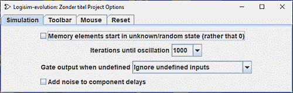

אפשרויות פרויקט
Logisim תומכת בשתי קטגוריות של אפשרויות תצורה: העדפות אפליקציה ופרויקט אפשרויות. העדפות היישום מתייחסות להעדפות המשתרעות על כל הפרויקטים הפתוחים, בעוד הפרויקט האפשרויות הן ספציפיות לפרויקט אחד. סעיף זה דן באפשרויות הפרויקט; יישום העדפות מתוארות בסעיף אחר.
אתה יכול להציג ולערוך אפשרויות פרויקט באמצעות | פרויקט |→| אפשרויות... |. זה מעלה את חלון האפשרויות עם מספר כרטיסיות.

נדון בכל אחת מהכרטיסיות הללו בנפרד.
כרטיסיית הסימולציה
כרטיסיית סרגל הכלים
כרטיסיית העכבר
כרטיסיית האיפוס
הבא: כרטיסיית הסימולציה.